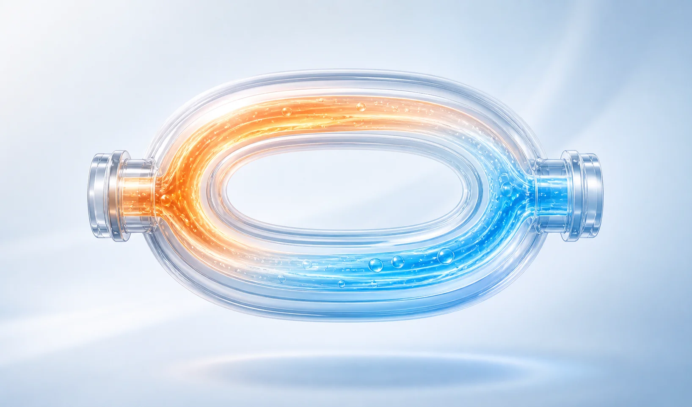
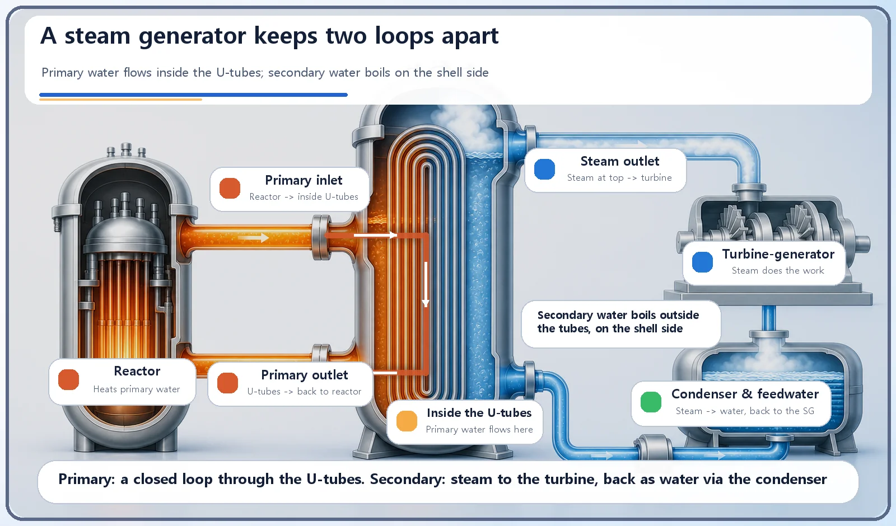
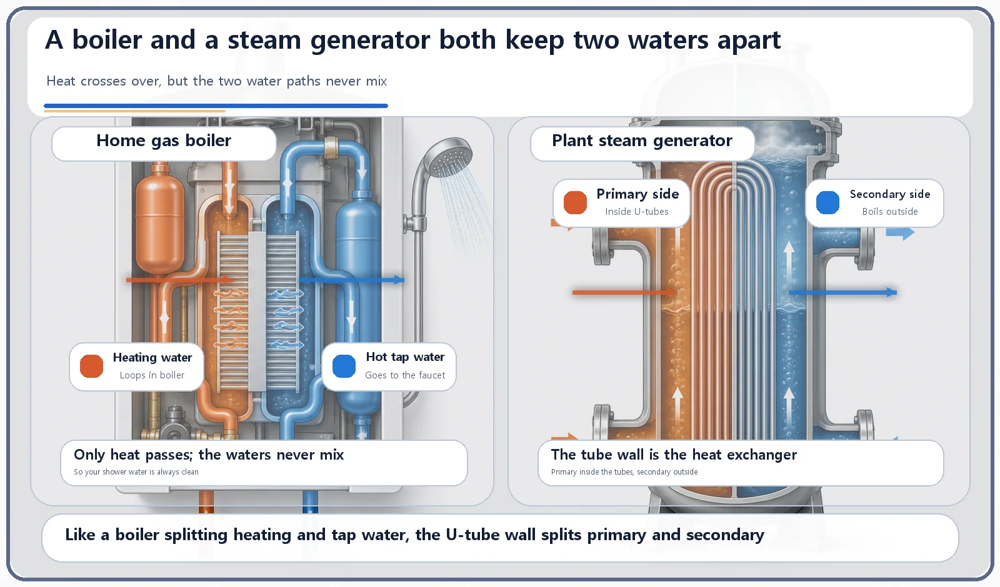

Reactor Components · 061
Why Your Boiler Heats Water Twice — The Steam Generator, Explained
Hot reactor water flows inside thousands of U-tubes while separate water boils outside them. Only heat crosses the wall.

In a pressurized water reactor, the water that cools the core never goes to the turbine. A steam generator sits between the two: hot reactor water flows inside thousands of U-shaped tubes, and completely separate water outside the tubes boils into steam. Only heat crosses the tube walls, so any radioactive material stays in the reactor loop.
Has your shower ever smelled like radiator water?
Think about a home combination boiler, the kind that runs both your radiators (or underfloor heating) and your hot taps. Inside, water heated by a gas flame circulates endlessly through the heating pipes. But the hot water that comes out of your shower is not that same water. A heat exchanger inside the boiler passes only the heating water's heat across to the tap-water line, and the two waters never mix. That is why you always wash in clean water, not in heating water that has been looping through old pipes and may have picked up sludge along the way.
The reactor pressure vessel is the container that holds the core. Now it is time to look beyond that container, to the first gateway that turns the reactor's heat into steam a power plant can actually use: the steam generator.
The steam generator: a middleman that hands over only heat
In a pressurized water reactor (PWR), the coolant inside the reactor, called the primary-system water, is kept at very high pressure. That pressure keeps the water liquid even when it is extremely hot, so it does not boil. This hot primary water leaves the reactor and flows into a large heat exchanger: the steam generator.
Inside the steam generator are thousands of thin heat-transfer tubes, each bent into a U shape and packed together in a bundle. The hot primary water flows through the inside of these tubes. The space outside the tubes is filled with completely separate water, the secondary-system water. The primary water passes only its heat through the tube walls; it never mixes directly with the secondary water. Heated this way, the secondary water boils into steam, and that steam leaves to drive the turbine. The primary water, now cooler after giving up its heat, returns to the reactor and goes around again.

Why go to the trouble of two separate loops?
Because the primary water passes straight through the core, it may carry very small amounts of radioactive material, such as fission products. If the primary and secondary water simply mixed, the risk of spreading radioactive material to equipment all over the plant, like the turbine and the condenser, would go up.
The steam generator acts as a barrier that passes heat across while never letting the water mix. That way radioactive material stays confined in the primary system, and only energy is handed over to the secondary system. Like the fuel cladding and the reactor pressure vessel, the steam generator is one of the layered safety barriers in a nuclear plant. Just as a boiler's heat exchanger keeps heating water and tap water apart, the steam generator keeps the primary system, which may contain radioactive material, apart from the secondary system that goes on to the turbine.

| Home gas boiler | PWR steam generator | |
|---|---|---|
| Hot side | Heating water, loops through the heating pipes | Primary water, loops through the reactor core |
| Receiving side | Hot tap water, goes to the faucet | Secondary water, boils into steam for the turbine |
| What crosses the wall | Heat only | Heat only |
| Why keep them apart | Clean water for washing | Keep radioactive material in the primary system |
Two easy mix-ups
A steam generator and a pressure vessel are different pieces of equipment. The pressure vessel holds the core itself. The steam generator is a heat exchanger outside the core that moves heat from the primary system to the secondary system. The two are connected by piping, but they sit in different places and are separate components.
The primary and secondary systems are physically separate loops. The primary system is the coolant loop that passes directly through the core. The secondary system is a separate water-and-steam loop that only receives heat in the steam generator and then goes to the turbine. (Some reactor types, such as the boiling water reactor, make steam directly in the core and have no separate steam generator. This article uses the pressurized water reactor, the most widely used design in South Korea, as its reference.)
The short version
A steam generator is a large heat exchanger that passes only heat between the hot primary coolant and the secondary water. The U-shaped tubes sit between the two systems, and their waters never mix. The loops are kept separate to isolate the primary system, which may contain radioactive material, from the turbine and other equipment. Just as a home boiler keeps heating water and tap water apart, a steam generator keeps the reactor system and the turbine system apart.
After the pressure vessel that holds the core, the steam generator is where that heat becomes real steam. Next in line is the device that keeps the pressure in this system steady: the pressurizer.